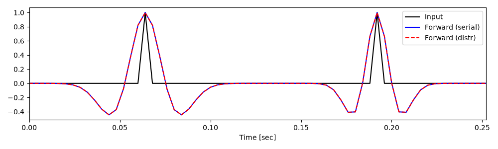
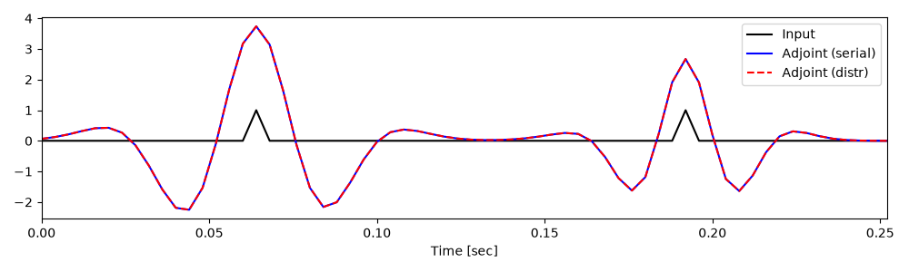
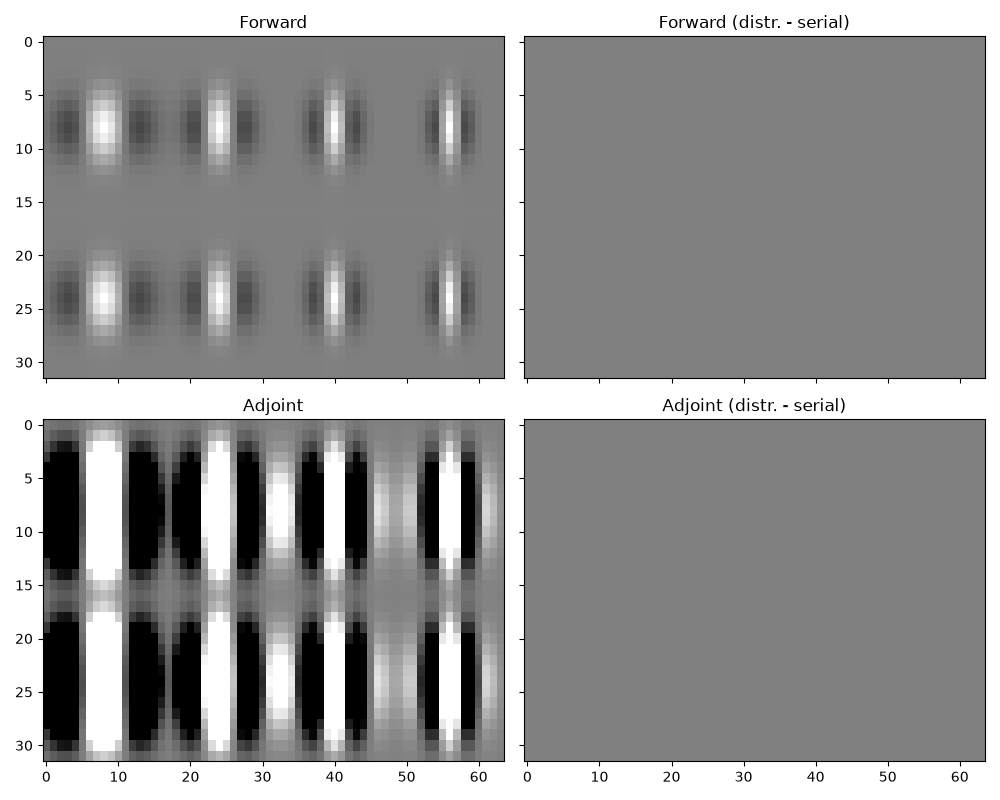

Note
Go to the end to download the full example code.
Halo#
This example demonstrates how to use the pylops_mpi.basicoperators.MPIHalo
operator.
This operator is specifically designed to extend pylops-mpi’s capabilities in terms of
chunking of N-dimensional distributed arrays when solving inverse problems with
pylops-mpi’s operators and solvers. As a matter of fact, whilst
pylops_mpi.DistributedArray allows one to create N-dimensional array
distributed over a given axis (defined via the axis paramater), only
1-dimensional distributed arrays can be used with pylops-mpi’s operators and solvers.
Moreover, several operators require accessing neighbouring values, which for values at
the edges of a local array belong to neighouring ranks. The process of obtaining ghost
cells (or halos) from neighouring ranks is implemented in the add_ghost_cells method
of the pylops_mpi.DistributedArray class; however, once again as the chunking
is so far limited to only one axis, also haloing happens in a single dimension.
The pylops_mpi.basicoperators.MPIHalo operator allows to internally convert a
1-dimensional distributed array into a N-dimensional distributed array (whilst never
physically changing the actual shape of local arrays) and extracting a number of user-defined
ghost cells over all axes. Moreover, even for the case when we are interested to chunk the
distributed array over a single axis, having an operator that can be chained to any other
pre-existent operator may open doors to an easier implementation of new operators compared
to having access to add_ghost_cells method to be used directly in the matvec/rmatvec
implementation of an operator.
from matplotlib import pyplot as plt
import sys
import math
import time
import numpy as np
import pylops
from pylops.utils.wavelets import ricker
from pylops_mpi.basicoperators.Halo import MPIHalo, halo_block_split
from mpi4py import MPI
from scipy.signal.windows import gaussian
import pylops_mpi
plt.close("all")
np.random.seed(42)
comm = MPI.COMM_WORLD
rank = comm.Get_rank()
size = comm.Get_size()
def pause(comm, t=4):
sys.stdout.flush()
comm.barrier()
time.sleep(t)
def local_extent_from_slice(local_shape, local_slice, halo):
lefts = []
rights = []
if isinstance(halo, int):
for sl in local_slice:
lefts.append(halo if (sl.start or 0) > 0 else 0)
rights.append(halo if sl.stop is not None else 0)
else:
for sl, hal in zip(local_slice, halo):
lefts.append(hal if (sl.start or 0) > 0 else 0)
rights.append(hal if sl.stop is not None else 0)
extent = tuple(dim + l + r for dim, l, r in zip(local_shape, lefts, rights))
return extent, lefts, rights
Let’s start by considering a 1-dimensional distributed array. We are
interested to compute a first derivative: however, because we are required
to use a stencil of size >=2, at the edges of the local arrays we are
required to borrow cells from neighbouring ranks. As already mentioned, the
pylops_mpi.basicoperators.MPIFirstDerivative operator does that
under the hood using the add_ghost_cells method of the
pylops_mpi.DistributedArray class; however, we will see how we
can now achieve the same without having to re-implement the derivative operator
in pylops-mpi. Instead, we will simply combine the
pylops.FirstDerivative operator with the
pylops_mpi.basicoperators.MPIBlockDiag and
pylops_mpi.basicoperators.MPIHalo operators.
To begin with, let’s however simply create and apply a
pylops_mpi.basicoperators.MPIHalo operator with a halo of 1
(apart from the edges of the global array, where no halo is added)
# Halo operator
nlocal = 64
n = nlocal * size
proc_grid_shape = (size, ) # number of partitions over each axis
halo = 1 if size > 1 else 0 # for Sphinx-gallery as it runs with 1 rank
halo_op = MPIHalo(
dims=(n, ),
halo=halo,
proc_grid_shape=proc_grid_shape,
comm=comm
)
# Global array
x = np.arange(n).astype(np.float64)
# Distributed array
x_dist = pylops_mpi.DistributedArray(
global_shape=n,
base_comm=comm,
partition=pylops_mpi.Partition.SCATTER)
x_slice = halo_block_split((n, ), comm, proc_grid_shape)
x_local = x[x_slice]
x_dist.local_array[:] = x_local
# Apply halo
x_dist_halo = halo_op @ x_dist
if rank == 0:
print('1D Halo with halo=1')
pause(comm, t=1)
print(f"Rank {rank} - shape before/after haloing: {x_dist.local_array.size}"
f"/{x_dist_halo.local_array.size}")
1D Halo with halo=1
Rank 0 - shape before/after haloing: 64/64
Let’s now instead compute the derivative and compare it with the result of
the pylops_mpi.basicoperators.MPIFirstDerivative operator.
# Derivative operator (using Halo)
if size == 1:
local_shape_with_halo = x_local.size # for Sphinx-gallery
else:
if rank == 0 or rank == size - 1:
local_shape_with_halo = (x_local.size + 1, )
else:
local_shape_with_halo = (x_local.size + 2, )
DOp = pylops.FirstDerivative(dims=local_shape_with_halo, axis=0)
DOp_dist = pylops_mpi.MPIBlockDiag([DOp, ])
Op_dist = halo_op.H @ DOp_dist @ halo_op
y_dist = Op_dist @ x_dist
# Derivative operator (original)
DOp1_dist = pylops_mpi.MPIFirstDerivative(dims=n)
y1_dist = DOp1_dist @ x_dist
assert np.allclose(
y_dist.local_array,
y1_dist.local_array)
So good so far, we can reproduce a 2-nd order, centered first derivative by combining basic pylops and pylops-mpi operators. Let’s see if we can do the same with a 5-th order derivative that requires having an halo of 2.
pause(comm, t=1)
halo = 2 if size > 1 else 0 # for Sphinx-gallery as it runs with 1 rank
halo_op = MPIHalo(
dims=(n, ),
halo=halo,
proc_grid_shape=proc_grid_shape,
comm=comm
)
# Apply halo
x_dist_halo = halo_op @ x_dist
if rank == 0:
print('1D Halo with halo=2')
pause(comm, t=1)
print(f"Rank {rank} - shape before/after haloing: {x_dist.local_array.size}"
f"/{x_dist_halo.local_array.size}")
# Derivative operator (using Halo)
DOp = pylops.FirstDerivative(dims=x_dist_halo.local_array.size, axis=0, order=5)
DOp_dist = pylops_mpi.MPIBlockDiag([DOp, ])
Op_dist = halo_op.H @ DOp_dist @ halo_op
y_dist = Op_dist @ x_dist
# Derivative operator (original)
DOp1_dist = pylops_mpi.MPIFirstDerivative(dims=n, order=5)
y1_dist = DOp1_dist @ x_dist
assert np.allclose(
y_dist.local_array,
y1_dist.local_array)
1D Halo with halo=2
Rank 0 - shape before/after haloing: 64/64
Let’s move to something a bit more complicated. We assume to have a
2-dimensional array that is chunked over both axes. Note that since we
partition the array over both axes, the number of ranks must be a power of
2 of an integer number. First, we simply want to multiply each element by
a scalar; whilst this does not really require an halo, we will see how we
can create local pylops.basicoperators.Diagonal operators of the
correct size.
# Input and halo partition
dims = (n, n)
size_2 = math.pow(size, 1 / 2)
power_of_2 = size_2 == int(size_2)
if not power_of_2:
pause(comm, t=1)
if rank == 0:
print(f"Number of ranks = {size} is not a power of 2 of an "
"integer number, skipping example with 2-dimensional array")
else:
# Halo operator
size_2 = int(size_2)
proc_grid_shape = (size_2, size_2) # number of partitions over each axis
halo = 1 if size > 1 else 0 # for Sphinx-gallery as it runs with 1 rank
halo_op = MPIHalo(
dims=dims,
halo=halo,
proc_grid_shape=proc_grid_shape,
comm=comm
)
# Global array
x = np.arange(np.prod(dims)).astype(np.float64).reshape(dims)
# Local array
x_slice = halo_block_split(dims, comm, proc_grid_shape)
x_local = x[x_slice]
x_local_shape = x_local.shape
xhalo_local_shape, lefts, rights = \
local_extent_from_slice(x_local_shape, x_slice, halo)
xhalo_local_size = np.prod(xhalo_local_shape)
# Distributed array
x_dist = pylops_mpi.DistributedArray(
global_shape=np.prod(dims),
local_shapes=comm.allgather(np.prod(x_local_shape)),
base_comm=comm,
partition=pylops_mpi.Partition.SCATTER)
x_dist.local_array[:] = x_local.flatten()
# Apply halo
x_dist_halo = halo_op @ x_dist
if rank == 0:
print('2D Halo with halo=1')
pause(comm, t=1)
print(f"Rank {rank} - shape before/after haloing: {x_local_shape}"
f"/{xhalo_local_shape}")
# Diagonal operator acting also on the halo, then halo is removed
DOp = pylops.Diagonal(2 * np.ones(xhalo_local_size))
DOp_dist = pylops_mpi.MPIBlockDiag([DOp, ])
Op_dist = halo_op.H @ DOp_dist @ halo_op
y_dist = Op_dist @ x_dist
assert np.allclose(2 * x_dist.local_array, y_dist.local_array)
2D Halo with halo=1
Rank 0 - shape before/after haloing: (64, 64)/(64, 64)
Next, we turn our attention back to the first derivative; this time, since we assume that the 2-dimensional array is chunked over both axes, we will see that we can leverage the halo to compute the derivative over either of the axes
if power_of_2:
halo_op = MPIHalo(
dims=dims,
halo=halo,
proc_grid_shape=proc_grid_shape,
comm=comm
)
for axis in [0, 1]:
DOp = pylops.FirstDerivative(dims=xhalo_local_shape, axis=axis)
DOp_dist = pylops_mpi.MPIBlockDiag([DOp, ])
Op_dist = halo_op.H @ DOp_dist @ halo_op
y_dist = Op_dist @ x_dist
DOp1 = pylops.FirstDerivative(dims=dims, axis=axis)
y = DOp1 @ x
core_slices = tuple(slice(left, None if right == 0 else -right)
for left, right in zip(lefts, rights))
# Check that derivative on entire 2d object is the same as the one on blocks with halo
assert np.allclose(y[x_slice][core_slices],
y_dist.local_array.reshape(x_local_shape)[core_slices])
And we repeat the same with a 3-dimensional array
# Input and halo partition
dims = (n, n, n)
size_3 = math.pow(size, 1 / 3)
power_of_3 = size_3 == int(size_3)
if not power_of_3:
pause(comm, t=1)
if rank == 0:
print(f"Number of ranks = {size} is not a power of 3 of an "
"integer number, skipping example with 3-dimensional array")
else:
# Halo operator
size_3 = int(size_3)
proc_grid_shape = (size_3, size_3, size_3) # number of partitions over each axis
halo = 1
halo_op = MPIHalo(
dims=dims,
halo=halo,
proc_grid_shape=proc_grid_shape,
comm=comm
)
# Global array
x = np.arange(np.prod(dims)).astype(np.float64).reshape(dims)
# Local array
x_slice = halo_block_split(dims, comm, proc_grid_shape)
x_local = x[x_slice]
x_local_shape = x_local.shape
xhalo_local_shape, lefts, rights = local_extent_from_slice(x_local_shape, x_slice, halo)
xhalo_local_size = np.prod(xhalo_local_shape)
if rank == 0:
print('3D Halo with halo=1')
pause(comm, t=1)
print(f"Rank {rank} - shape before/after haloing: {x_local_shape}"
f"/{xhalo_local_shape}")
# Distributed array
x_dist = pylops_mpi.DistributedArray(
global_shape=np.prod(dims),
local_shapes=comm.allgather(np.prod(x_local_shape)),
base_comm=comm,
partition=pylops_mpi.Partition.SCATTER)
x_dist.local_array[:] = x_local.flatten()
for axis in [0, 1, 2]:
DOp = pylops.FirstDerivative(dims=xhalo_local_shape, axis=axis)
DOp_dist = pylops_mpi.MPIBlockDiag([DOp, ])
Op_dist = halo_op.H @ DOp_dist @ halo_op
y_dist = Op_dist @ x_dist
DOp1 = pylops.FirstDerivative(dims=dims, axis=axis)
y = DOp1 @ x
core_slices = tuple(slice(left, None if right == 0 else -right)
for left, right in zip(lefts, rights))
# Check that derivative on entire 2d object is the same as the one on blocks with halo
assert np.allclose(y[x_slice][core_slices],
y_dist.local_array.reshape(x_local_shape)[core_slices])
3D Halo with halo=1
Rank 0 - shape before/after haloing: (64, 64, 64)/(64, 64, 64)
Next, we move to something more interesting. We will use the
pylops_mpi.basicoperators.MPIHalo operator to create a distributed
non-stationary convolutional operator acting on 1-dimensional array. This will
be ultimately equivalent to PyLops’
pylops.signalprocessing.NonStationaryConvolve1D, however both the
input array and the filters will be distibuted. What makes this operator
interesting is that we need to handle convolutions at the edges between
different ranks and to do that we will halo the input array of a number of
samples equal to the distance between two filters and we will also borrow the
filtering from the next/previous rank.
# Input signal operator
nlocal = 64
nfilters_local = 2
n = nlocal * size
proc_grid_shape = (size, )
# Filters
ntw = 16
dt = 0.004
tw = np.arange(ntw) * dt
fs = np.arange(nfilters_local * size) * 8 + 20
wavs = np.stack([ricker(tw, f0=f)[0] for f in fs])
# Filters centers (selected such that they are symmetric on either
# side of the edges of the distributed array between ranks)
n_between_h = nlocal // nfilters_local
ih = nlocal // (2 * nfilters_local) + \
np.arange(0, nlocal * size, n_between_h)
pause(comm, t=1)
if rank == 0:
print(f"Filters centers: {ih}")
# Input signal
t = np.arange(n) * dt
x = np.zeros(n, dtype=np.float64)
x[ih] = 1.0
# Halo operator
halo = n_between_h if size > 1 else 0 # for Sphinx-gallery as it runs with 1 rank
halo_op = MPIHalo(
dims=(n, ),
halo=halo,
proc_grid_shape=proc_grid_shape,
comm=comm
)
# Distributed array
x_dist = pylops_mpi.DistributedArray(
global_shape=n,
base_comm=comm,
partition=pylops_mpi.Partition.SCATTER)
x_slice = halo_block_split((n, ), comm, proc_grid_shape)
x_local = x[x_slice]
x_dist.local_array[:] = x_local
x_local_shape = x_local.shape
xhalo_local_shape, lefts, rights = \
local_extent_from_slice(x_local_shape, x_slice, halo)
pause(comm, t=1)
print(f"Rank {rank} - shape before/after haloing: {x_local_shape}"
f"/{xhalo_local_shape}")
# Create operators
if size == 1:
# for Sphinx-gallery
COp = pylops.signalprocessing.NonStationaryConvolve1D(
dims=nlocal + halo, hs=wavs, ih=ih)
else:
if rank == 0:
# Only one extra filters on the right
COp = pylops.signalprocessing.NonStationaryConvolve1D(
dims=nlocal + halo, hs=wavs[:nfilters_local + 1],
ih=ih[:nfilters_local + 1]
)
elif rank == size - 1:
# Only one extra filters on the left
COp = pylops.signalprocessing.NonStationaryConvolve1D(
dims=nlocal + halo, hs=wavs[-nfilters_local - 1:],
ih=ih[-nfilters_local - 1:] - x_slice[0].start + halo
)
else:
# Two extra filters on either side
COp = pylops.signalprocessing.NonStationaryConvolve1D(
dims=nlocal + 2 * halo, hs=wavs[nfilters_local * rank - 1:nfilters_local * (rank + 1) + 1],
ih=ih[nfilters_local * rank - 1:nfilters_local * (rank + 1) + 1] - x_slice[0].start + halo
)
# Create and apply total operator
COp_dist = pylops_mpi.MPIBlockDiag([COp, ])
Op_dist = halo_op.H @ COp_dist @ halo_op
y_dist = Op_dist @ x_dist
xadj_dist = Op_dist.H @ y_dist
y_dist = y_dist.asarray()
xadj_dist = xadj_dist.asarray()
# Create and apply benchmark serial operator
COp = pylops.signalprocessing.NonStationaryConvolve1D(
dims=n, hs=wavs, ih=ih
)
y = COp @ x
xadj = COp.H @ y
/opt/hostedtoolcache/Python/3.11.15/x64/lib/python3.11/site-packages/pylops/utils/wavelets.py:196: UserWarning: One sample removed from time axis...
t = _tcrop(t)
Filters centers: [16 48]
Rank 0 - shape before/after haloing: (64,)/(64,)
Let’s display the results
if rank == 0:
plt.figure(figsize=(10, 3))
plt.plot(t, x, "k", label="Input")
plt.plot(t, y, "b", label="Forward (serial)")
plt.plot(t, y_dist, "--r", label="Forward (distr)")
plt.xlabel("Time [sec]")
plt.xlim(0, t[-1])
plt.legend()
plt.tight_layout()
plt.figure(figsize=(10, 3))
plt.plot(t, x, "k", label="Input")
plt.plot(t, xadj, "b", label="Adjoint (serial)")
plt.plot(t, xadj_dist, "--r", label="Adjoint (distr)")
plt.xlabel("Time [sec]")
plt.xlim(0, t[-1])
plt.legend()
plt.tight_layout()


We repeat the same exercise for a 2-dimensional array using PyLops’
pylops.signalprocessing.NonStationaryConvolve2D; here
the input array and the filters are distibuted along the slowest axis.
# Input signal operator
nlocal = (32, 64)
nfilters_local = (2, 4)
proc_grid_shape = (size, 1)
n = (nlocal[0] * proc_grid_shape[0],
nlocal[1] * proc_grid_shape[1])
# Filters
ntw = 15
dt = 0.004
tw = np.arange(ntw) * dt
fs = np.arange(nfilters_local[1] * proc_grid_shape[1]) * 8 + 20
wavy = gaussian(ntw, 2.0)
wavs = np.zeros((nfilters_local[0] * proc_grid_shape[0],
nfilters_local[1] * proc_grid_shape[1],
ntw, ntw * 2 - 1))
for ify in range(nfilters_local[0] * proc_grid_shape[0]):
for ifx in range(nfilters_local[1] * proc_grid_shape[1]):
wavx = ricker(tw, f0=fs[ifx])[0]
wav = np.outer(wavy, wavx[None].T)
wavs[ify, ifx] = wav
# Filters centers (selected such that they are symmetric on either
# side of the edges of the distributed array between ranks)
n_between_hy = nlocal[0] // nfilters_local[0]
n_between_hx = nlocal[1] // nfilters_local[1]
ihy = nlocal[0] // (2 * nfilters_local[0]) + np.arange(0, nlocal[0] * proc_grid_shape[0], n_between_hy)
ihx = nlocal[1] // (2 * nfilters_local[1]) + np.arange(0, nlocal[1] * proc_grid_shape[1], n_between_hx)
pause(comm, t=1)
if rank == 0:
print(f"Filters centers - 1st axis: {ihy}, 2nd axis: {ihx}")
# Input signal
x = np.zeros(n, dtype=np.float64)
for ih in ihy:
x[ih, ihx] = 1.0
# Halo operator
halo = (n_between_hy, 0) if size > 1 else (0, 0) # for Sphinx-gallery as it runs with 1 rank
halo_op = MPIHalo(
dims=n,
halo=n_between_hy, # STRANGE!
proc_grid_shape=proc_grid_shape,
comm=comm
)
# Distributed array
x_dist = pylops_mpi.DistributedArray(
global_shape=np.prod(n),
base_comm=comm,
partition=pylops_mpi.Partition.SCATTER)
x_slice = halo_block_split(n, comm, proc_grid_shape)
x_local = x[x_slice]
x_dist.local_array[:] = x_local.ravel()
# Apply halo
x_dist_halo = halo_op @ x_dist
x_local_shape = x_local.shape
xhalo_local_shape, lefts, rights = \
local_extent_from_slice(x_local_shape, x_slice, halo)
xhalo_local_size = np.prod(xhalo_local_shape)
pause(comm, t=1)
print(f"Rank {rank} - shape before/after haloing: {x_local_shape}"
f"/{xhalo_local_shape}")
# Create operators
if size == 1:
# for Sphinx-gallery
COp = pylops.signalprocessing.NonStationaryConvolve2D(
dims=(nlocal[0] + halo[0], n[1]), hs=wavs, ihx=ihy, ihz=ihx)
else:
if rank == 0:
COp = pylops.signalprocessing.NonStationaryConvolve2D(
dims=(nlocal[0] + halo[0], n[1]),
hs=wavs[:nfilters_local[0] + 1],
ihx=ihy[:nfilters_local[0] + 1],
ihz=ihx
)
elif rank == size - 1:
COp = pylops.signalprocessing.NonStationaryConvolve2D(
dims=(nlocal[0] + halo[0], n[1]),
hs=wavs[-nfilters_local[0] - 1:],
ihx=ihy[-nfilters_local[0] - 1:] - x_slice[0].start + halo[0],
ihz=ihx
)
else:
COp = pylops.signalprocessing.NonStationaryConvolve2D(
dims=(nlocal[0] + 2 * halo[0], n[1]),
hs=wavs[nfilters_local[0] * rank - 1:nfilters_local[0] * (rank + 1) + 1],
ihx=ihy[nfilters_local[0] * rank - 1:nfilters_local[0] * (rank + 1) + 1] - x_slice[0].start + halo[0],
ihz=ihx
)
# Create and apply total operator
COp_dist = pylops_mpi.MPIBlockDiag([COp, ])
Op_dist = halo_op.H @ COp_dist @ halo_op
y_dist = Op_dist @ x_dist
xadj_dist = Op_dist.H @ y_dist
y_dist = y_dist.asarray().reshape(n)
xadj_dist = xadj_dist.asarray().reshape(n)
# Create and apply benchmark serial operator
COp = pylops.signalprocessing.NonStationaryConvolve2D(
dims=n, hs=wavs, ihx=ihy, ihz=ihx
)
y = COp @ x
xadj = COp.H @ y
Filters centers - 1st axis: [ 8 24], 2nd axis: [ 8 24 40 56]
Rank 0 - shape before/after haloing: (32, 64)/(32, 64)
Let’s display the results
if rank == 0:
fig, axs = plt.subplots(2, 2, sharex=True, sharey=True, figsize=(10, 8))
axs[0, 0].imshow(y_dist, cmap="gray", vmin=-1, vmax=1)
axs[0, 0].set_title("Forward")
axs[0, 1].imshow(y_dist - y, cmap="gray", vmin=-.1, vmax=.1)
axs[0, 1].set_title("Forward (distr. - serial)")
axs[1, 0].imshow(xadj_dist, cmap="gray", vmin=-1, vmax=1)
axs[1, 0].set_title("Adjoint")
axs[1, 1].imshow(xadj_dist - xadj, cmap="gray", vmin=-.1, vmax=.1)
axs[1, 1].set_title("Adjoint (distr. - serial)")
for ax in axs.flatten():
ax.axis("tight")
fig.tight_layout()

Total running time of the script: (0 minutes 9.578 seconds)